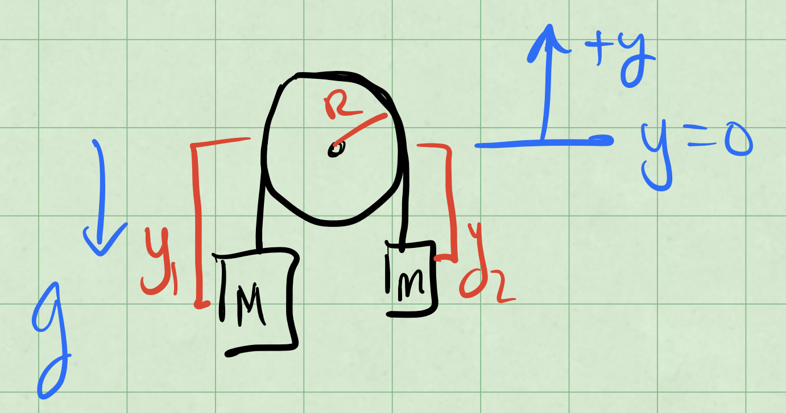
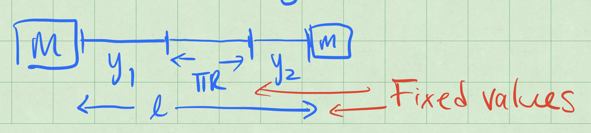
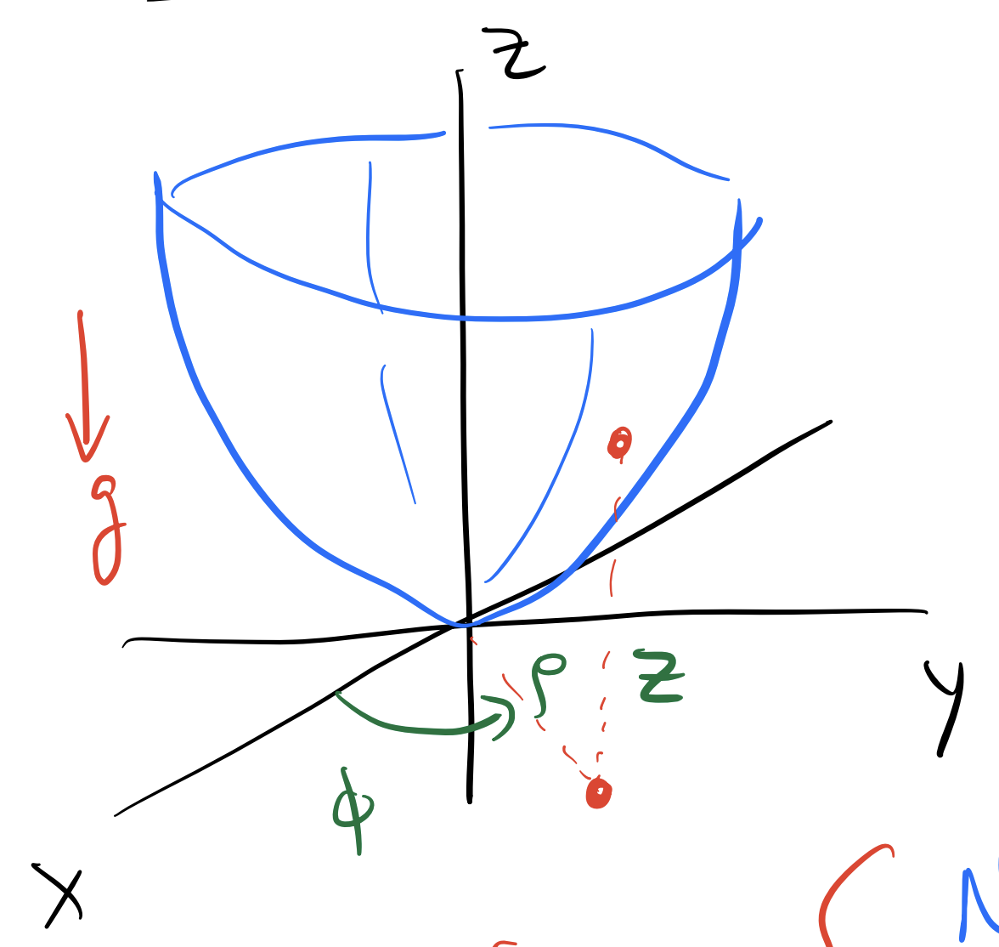

13 - Applying the Lagrangian Formulation#

Handwritten Notes
Learning Goals#
After studying Lesson 13, you should be able to:
Derive the Lagrangian for systems with constraints, such as the Atwood machine and bead in a parabolic bowl, and simplify it using generalized coordinates.
Apply the Euler-Lagrange equation to derive equations of motion for systems with symmetries, identifying conserved quantities like linear and angular momentum.
Analyze the role of constraints in reducing the dimensionality of a system and their impact on the equations of motion.
Solve equations of motion for systems with rotational dynamics, such as the Atwood machine with a rotating pulley, and interpret the results.
Prepare equations of motion for numerical solutions by converting higher-order differential equations into systems of first-order equations.
The Lagrangian formulation of mechanics allows us to describe the motion of a system in terms of its kinetic and potential energy, rather than its forces. This approach is particularly useful for systems with constraints or when dealing with generalized coordinates. There’s a few general concepts that arise in Lagrangian mechanics that make it a powerful tool for analyzing mechanical systems.
First, the Lagrangian formulation emphasizes the idea of independent coordinates while also providing the flexibility to use any set of coordinates that are convenient for the problem at hand. This is in contrast to Newtonian mechanics, which often relies clearly structured position and velocity vectors.
Because the Lagrangian uses this generalized coordinate system, it is often easier to analyze complex systems with many degrees of freedom. Moreover, when dealing with constraints, the Lagrangian formulation allows us to incorporate these constraints directly into the equations of motion, which reduces the dimensionality of the problem.
In addition, the Lagrangian formulation is particularly useful for systems with symmetries. By applying Noether’s theorem, we can relate symmetries of the system to conserved quantities, which can simplify the analysis of the system’s motion. For example, if a particular system is invariant under time translations (for us no explicit time dependence in \(\mathcal{L}\)), we can conclude that energy is conserved. If a coordinate is cyclic (e.g., no \(x\) dependence in \(\mathcal{L}\)), we can conclude that the corresponding momentum (in this example, \(p_x\)) is conserved.
Lastly, the formalism produces generalized forces that are not necessarily equal to the physical forces acting on the system, but have corresponding generalized momenta. These are always produced in our equations of motion, but they might not be forces or momenta that we can measure directly, or that we can even define as a “force”, some are torques, for example.
Consider an \(N\) dimensional system with \(N\) generalized coordinates \(q_i\) and \(N\) generalized velocities \(\dot{q}_i\). The Lagrangian is defined as the difference between the kinetic energy \(T\) and the potential energy \(V\) of the system:
The derivative of the Lagrangian with respect to a generalized coordinate \(q_i\) is given by:
where \(F_{q_i}\) is the generalized force conjugate to the coordinate \(q_i\).
The derivative of the Lagrangian with respect to a generalized velocity \(\dot{q}_i\) is given by:
where \(p_{q_i}\) is the generalized momentum conjugate to the coordinate \(q_i\).
The Standard Model Lagrangian (17 minute video)
An understanding of physics formulated through Lagrangian Mechanics is a powerful and elegant way to describe the motion of particles and systems. But it can be much more than that. Much of the work of particle physics is done in the context of the Standard Model. The Standard Model is a theory that describes the electromagnetic, weak, and strong nuclear interactions. The Standard Model is a quantum field theory, which is formulated through a Lagrangian.
The video below provides an introduction to this equation and the Standard Model.
Examples of Lagrangian Mechanics#
We’ve seen the Lagrangian formulation of mechanics, and we have seen how to use it to derive the equations of motion for a system. We will cover a few common examples of Lagrangian mechanics and point out some of the subtleties that arise in each case.
Example: The Atwood Machine#
The Atwood machine consists of two masses, \(M\) and \(m\), connected by a massless string that passes over a massless pulley. The system is subject to gravity alone. The figure below shows the system along with a choice of coordinates \(y_1\) and \(y_2\) for the two masses.
{kind=link}

Fig. 37 Atwood Machine#
Error
Redraw as vector graphic and post SVG
These coordinates are measured from the center of the pulley and positive \(y_1\) and \(y_2\) are taken to be upward. Let’s try to use the Lagrangian formalism to find the equations of motion for this system.
Equation of Constraint#
But notice that \(y_1\) and \(y_2\) are no independent coordinates. If we unravel the string that is over the pulley, we find that (assume length of string is \(l\)):
where \(R\) is the radius of the pulley. That is shown in the figure below.
{kind=link}

Fig. 38 Unraveled String#
Error
Redraw as vector graphic and post SVG
The equation above is called an equation of constraint. It relates the coordinates \(y_1\) and \(y_2\) to each other. We can use this equation to eliminate one of the coordinates. Let’s eliminate \(y_2\):
This constraint has implications for velocities,
This is likely what we could have expected, that the two masses move in opposite directions at the same speed.
Constructing the Lagrangian#
Let’s use this constraint to reduce the number of coordinates in the Lagrangian.
We can do this by substituting \(y_2\) in terms of \(y_1\) into the energy equations:
where \(U_0 = mg(l-\pi R)\) is a constant and will not affect the equations of motion.
These derivatives give the following equation of motion:
Generalized Force#
Notice that the first term in the above equation is the force on the mass \(M\) in the Newtonian picture: the weight of \(M\) minus the weight of \(m\). That makes sense because the Lagrangian formalism is supposed to reproduce Newton’s laws, and the spatial derivative of the Lagrangian produces a generalized force.
The kinetic term has no spatial dependence, so it does not contribute to the generalized force.
Generalized Momentum#
The second term in the above equation is the time derivative of the momentum of the system using \(y_1\) as the coordinate:
Again, that is a sensible result because the Lagrangian formalism is supposed to reproduce Newton’s laws, and the generalized force is related to the time derivative of the generalized momentum.
Equation of Motion#
The equation of motion can be written as
With \(M > m\), this acceleration is downward as the larger mass \(M\) accelerates down. With \(\dot{y}_1 = -\dot{y}_2\), we know $\(\ddot{y}_2 = -\ddot{y}_1\)$, so that:
Again, with \(M > m\), this acceleration is upward as the smaller mass \(m\) accelerates up.
Example: Atwood Machine with Rotating Pulley#
In the previous example, we didn’t take into account the energy needed to rotate the pulley. Let’s do that now. Beucase the rope cannot slip, any small rotation \(Rd\phi\) of the pulley give a change \(dy_1\) in the position of mass \(M\). This is the no slip constraint.
If the pulley has a mass \(M_p\) and radius \(R\), then we must introduce it’s kinetic energy:
where \(I\) is the moment of inertia of the pulley and \(\omega\) is the angular velocity of the pulley, \(\omega = \dot{\phi}\). This angular velocity is related to the linear velocities of the masses.
We now map this additional kinetic energy into the problem.
But the constraint is such that,
We work these back into \(T\), \(V\), and \(\mathcal{L}\).
where \(\tilde{U}_0 = (M-m)gR\phi_0 + U_0\) is another constant that will not affect the equations of motion.
Torque and Angular Momentum#
Our generalized coordinate is \(\phi\) and our generalized velocity is \(\dot{\phi}\). We apply the Euler-Lagrange equation. We obtain the generalized force:
Notice that in this case, the generalized force is not the same as the force on mass \(M\) in the Newtonian picture. It’s a torque around the pulley.
We can find the generalized momentum in a similar way:
This is the angular momentum of the system about the axle. We can see that by breaking down each part and adding them up.
Add them up:
Or the magnitude:
Equation of Motion#
We return to the differential equation of motion:
which produces the following equation of motion:
which is a constant acceleration.
Example: Bead in a Parabolic Bowl#
A bead of mass \(m\) is constrained to move along a parabolic bowl. There is a gravitational force acting on the bead. The bowl is symmetric about the \(z\)-axis and the bead is constrained to move along the surface without friction or rolling. The bowl is described by the equation:
where \(c\) is a constant that describes the curvature of the bowl. The figure below shows the system.
{kind=link}

Fig. 39 Bead in a Parabolic Bowl#
Error
Redraw as vector graphic and post SCG
In this case the system is better solved in cylindrical coordinates. The coordinates are \((r, \phi, z)\), where \(r\) is the distance from the \(z\)-axis, \(\phi\) is the angle around the \(z\)-axis, and \(z\) is the height above the \(xy\)-plane as shown above.
With \(\langle \rho, \phi, z\rangle\) as the coordinates, equation for the constraint is:
Note that \(c\) has units.
The speed in cylindrical coordinates can be derived from the expressions in Cartesian coordinates, but we quote the result here:
Constructing the Lagrangian#
We write the kinetic and potential energy of the bead in terms of the coordinates \((r, \phi, z)\).
In principle, the Lagrangian can depend on all three coordinates and all three velocities.
There is no explicit time dependence, so we can ignore \(t\). When the Lagrangian has no explicit time dependence, we should expect the energy to be conserved. This form of Lagrangian analysis does not account for dissipation.
Moreover, with the symmetry of the problem, we can expect no \(\phi\) dependence. That is the gravitational potential energy only depends on \(z\) and not on \(\phi\). This is a consequence of the symmetry of the problem and indicates that \(\phi\) is a cyclic coordinate. We thus expect angular momentum to be conserved about the \(z\)-axis.
Lastly, the constraint equation gives us \(z\) in terms of \(\rho\):
And thus we can find the time derivative of \(z\):
So the Lagrangian can be simplified three variables:
Equations of Motion#
We can now apply the Euler-Lagrange equations to find the equations of motion. We will do this for each coordinate. Let’s start with \(\phi\) because there is only one term in the Lagrangian that depends on \(\dot{\phi}\).
This equation of motion indicates that the angular momentum about the \(z\)-axis is conserved, as we expected from the symmetry of the problem.
For the coordinate \(\rho\), we have:
We can now write the equation of motion:
We can clean this up a little bit:
We try to write both equations in terms of their accelerations. We have:
For which we can develop a solution anywhere away from the origin (\(\rho \neq 0\)).
Preparing for Numerical Solution#
We need to write these equations in a form that is ready for numerical solution. We can do this by writing the equations in terms of the first derivatives. Let \(\omega = \dot{\phi}\) and \(v = \dot{\rho}\). We get 4 1st order equations: